Final Project on Cultural Heritage Knowledge Graphs,
Ontology Enrichment and Semantic Technologies
About Sandro Botticelli
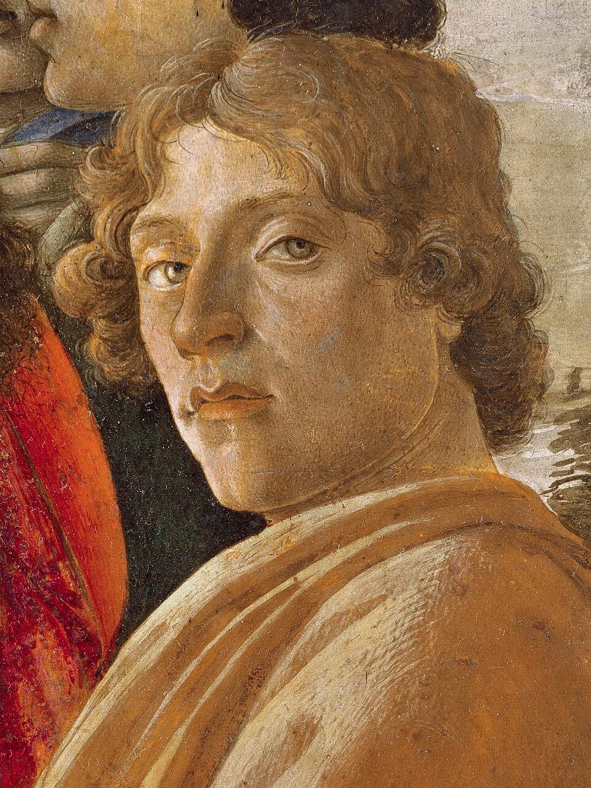
Portrait of Sandro Botticelli.
Sandro Botticelli (1445–1510) was one of the most influential painters
of the Italian Renaissance.
His works, including The Birth of Venus and Primavera,
are considered masterpieces of Renaissance art.
This project investigates how the ArCo Knowledge Graph can be used
to explore cultural heritage information related to Botticelli and
how ontology enrichment can improve cultural understanding.
Major Works
Two of Botticelli's most famous masterpieces are
The Birth of Venus and Primavera.
These artworks are closely associated with Renaissance
humanism and Neoplatonic philosophy.
The information about Sandro Botticelli can be represented as RDF
(Resource Description Framework) triples consisting of a subject,
predicate and object. RDF provides a standard semantic structure
for representing knowledge and relationships between entities.
The RDF representation demonstrates how cultural heritage knowledge
can be structured using semantic web technologies. Each statement
describes a relationship between Botticelli and a relevant entity,
allowing knowledge graphs to support machine-readable cultural
heritage information and semantic querying.
Section Conclusion
The RDF model provides a formal semantic representation of
Botticelli-related knowledge and serves as the foundation for
subsequent SPARQL querying and ontology enrichment activities.
Step 1 – Discovering Botticelli in ArCo
Research Question
Which cultural heritage entities related to Sandro Botticelli can be
found in the ArCo Knowledge Graph?
Purpose
The purpose of this query is to identify cultural heritage entities
associated with Sandro Botticelli in the ArCo Knowledge Graph and
explore how Botticelli-related resources are represented through
semantic technologies.
This query searches for cultural heritage entities whose labels contain
the keyword "Botticelli". The query uses the rdfs:label property and a
text-based filter to retrieve relevant resources from the ArCo
Knowledge Graph.
Query Results
The query returned multiple cultural heritage entities associated with
Sandro Botticelli, including artworks, museum collections, cultural
events and heritage resources represented in the ArCo Knowledge Graph.
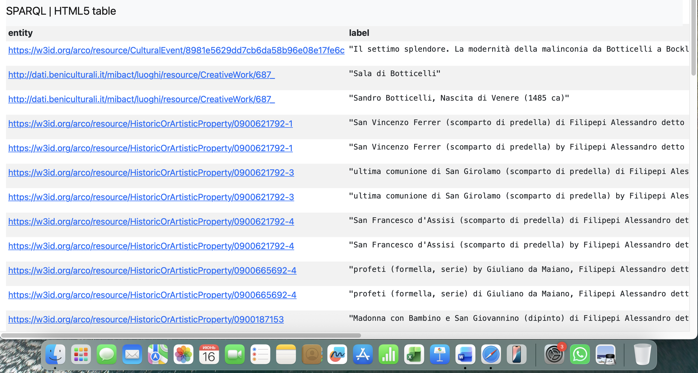
Figure 1. Results of the SPARQL query retrieving Botticelli-related
entities from ArCo.
Figure Interpretation
Figure 1 illustrates the output generated by the SPARQL query. The
results include multiple Botticelli-related cultural heritage entities
stored in the ArCo Knowledge Graph, demonstrating the availability of
semantic cultural heritage information.
Analysis of Results
The query returned several cultural heritage entities associated with
Botticelli, including artworks, museum collections, cultural events
and heritage resources. The results demonstrate that ArCo contains
multiple semantic connections related to Botticelli and provides a
valuable foundation for further cultural heritage analysis.
Technical Observations
The query relies on the rdfs:label property and a text-based filtering
approach. While effective for discovering Botticelli-related entities,
this method depends on the presence of the artist's name in entity
labels and may not retrieve resources connected through indirect
semantic relationships.
Step Conclusion
The ArCo Knowledge Graph successfully provides access to Botticelli-related
entities and metadata. These results form the basis for the subsequent
analysis and ontology enrichment activities presented in the following
steps.
Step 2 – Analysis of Retrieved Cultural Heritage Entities
Research Question
What semantic relationships and cultural heritage information can be
identified from the Botticelli-related entities retrieved from ArCo?
Purpose
The purpose of this step is to analyse the cultural heritage entities
retrieved in Step 1 and examine the semantic relationships represented
within the ArCo Knowledge Graph.
This query retrieves RDF properties and semantic relationships
associated with Botticelli-related entities. The query first identifies
resources whose labels contain the keyword "Botticelli" and then
retrieves all available properties and values connected to those
resources. This allows a deeper analysis of the semantic structure of
the ArCo Knowledge Graph.
Figure 2. Example of a cultural heritage entity and its semantic
relationships in ArCo.
Figure 2 Interpretation
Figure 2 illustrates an example of a Botticelli-related cultural
heritage entity together with its semantic relationships represented
within the ArCo Knowledge Graph. The figure demonstrates how entities
are connected through RDF properties and semantic links.
Figure 3. Botticelli-related artworks and museum collections
identified through ArCo.
Figure 3 Interpretation
Figure 3 presents a selection of Botticelli-related artworks and
museum collections identified through the ArCo Knowledge Graph.
The results highlight the diversity of cultural heritage resources
linked to Botticelli.
Analysis of Results
The retrieved entities reveal a network of artworks, museums,
collections and cultural heritage resources associated with
Sandro Botticelli. The semantic structure of ArCo makes it
possible to explore relationships between artists, artworks,
collections and institutions.
Technical Observations
The analysis demonstrates the importance of semantic relationships
for cultural heritage discovery. RDF properties and linked data
connections enable the retrieval of contextual information that
extends beyond simple keyword searches.
Step Conclusion
The analysis confirms that ArCo provides a rich semantic
representation of Botticelli-related cultural heritage entities.
The identified relationships support further investigation and
serve as the basis for identifying missing knowledge in the
next step.
Step 3 – Identifying Missing Information
Research Question
What important cultural heritage information related to Sandro
Botticelli is missing from the ArCo Knowledge Graph?
Purpose
The purpose of this step is to identify knowledge gaps within the
ArCo Knowledge Graph and determine whether important contextual
information about Botticelli is absent from the current semantic
representation.
Methodology
The entities and semantic relationships identified in the previous
steps were analysed and compared with information available in
art historical literature and museum documentation related to
Sandro Botticelli.
LLM-assisted Analysis
To identify potential knowledge gaps, multiple Large Language Models
(LLMs) were consulted using a series of prompts related to Sandro
Botticelli, Renaissance art and cultural heritage representation.
The objective was to determine whether important contextual,
philosophical or interpretative information was missing from the
ArCo Knowledge Graph.
LLM Query Documentation
The same prompt was submitted to multiple Large Language Models
(ChatGPT, Claude and Gemini) in order to compare their identification
of potential knowledge gaps related to Sandro Botticelli and the ArCo
Knowledge Graph.
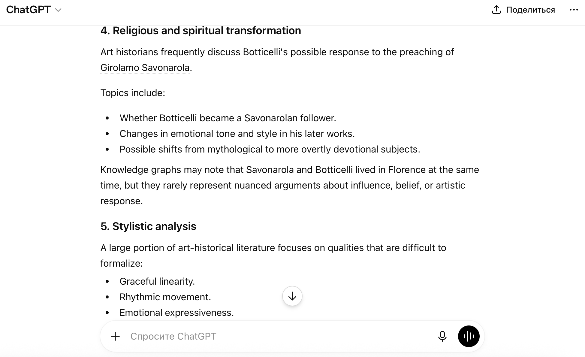
Figure 6. ChatGPT response – part 1.
Figure 7. ChatGPT response – part 2.
Figure 8. ChatGPT response – part 3.
Figure 9. ChatGPT response – part 4.
Figure 10. ChatGPT response – part 5.
Figure 11. ChatGPT response – part 6.
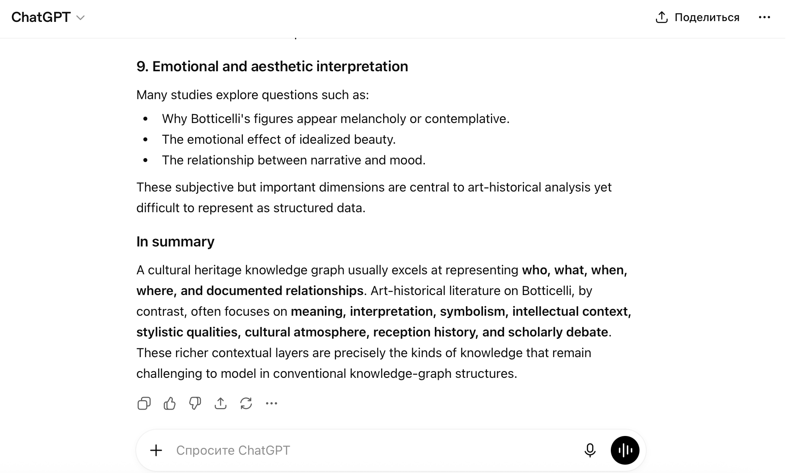
Figure 12. ChatGPT response – part 7.
Figure 13. Claude response – part 1.
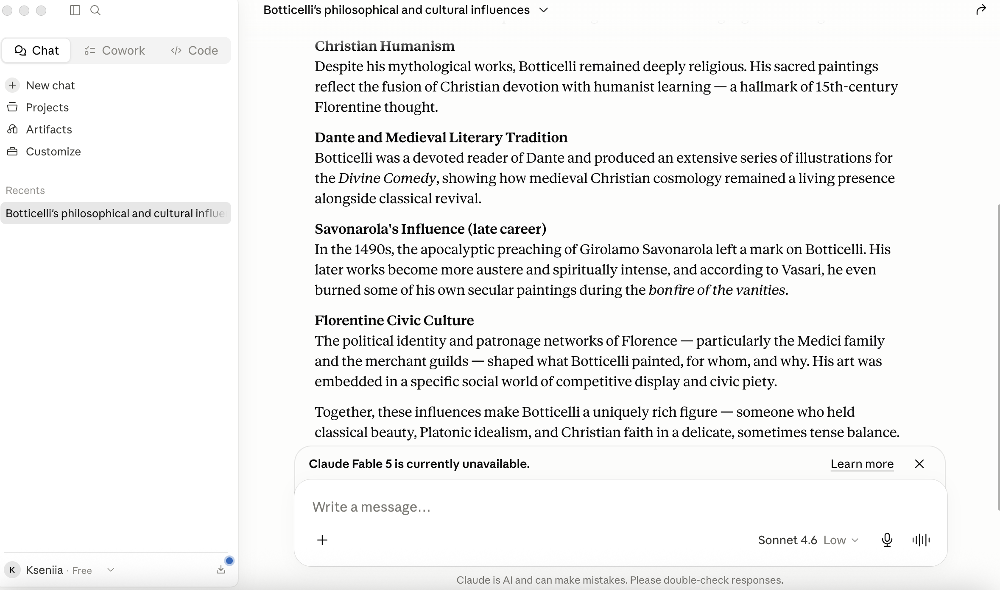
Figure 14. Claude response – part 2.
Figure 15. Gemini response – part 1.
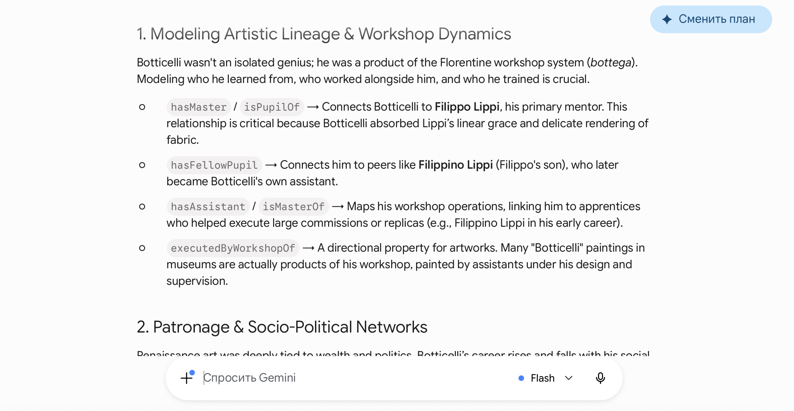
Figure 16. Gemini response – part 2.
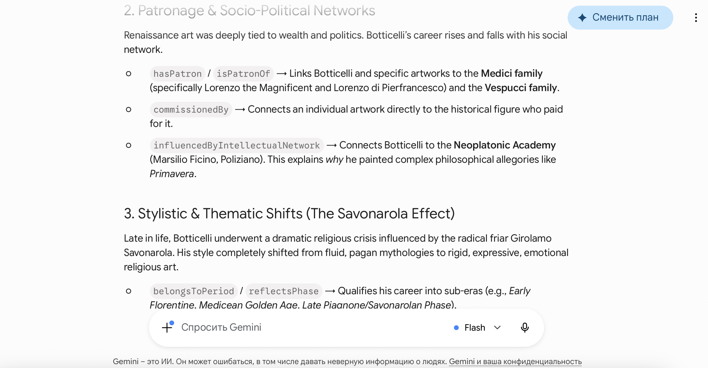
Figure 17. Gemini response – part 3.
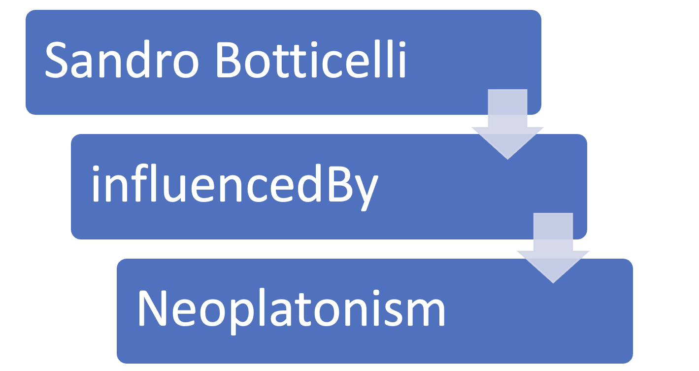
Figure 18. Gemini response – part 4.
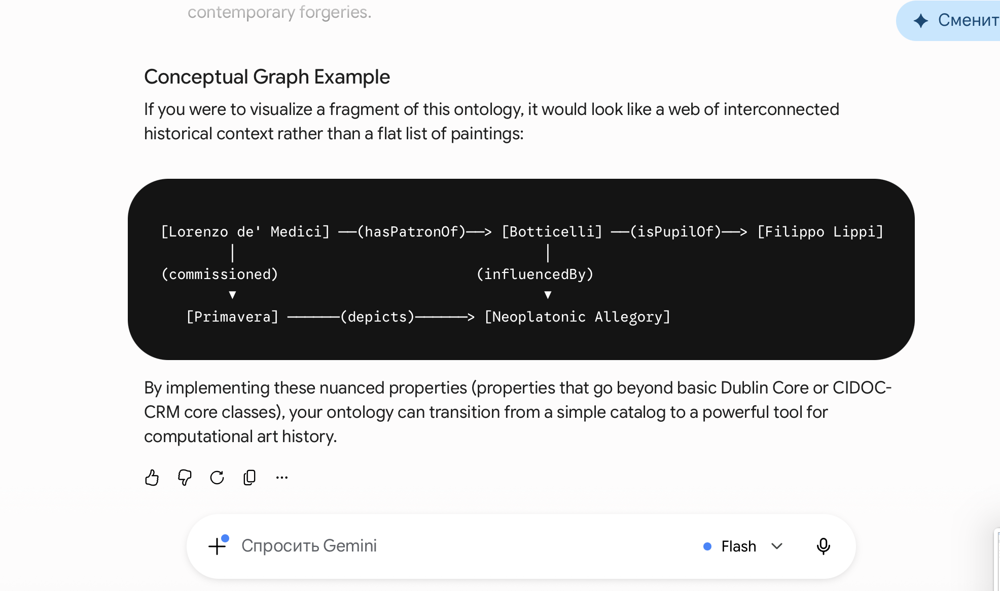
Figure 19. Gemini response – part 5.
Prompts Used
What important contextual information about Sandro Botticelli is
typically discussed in art historical literature but may not be
represented in a cultural heritage knowledge graph?
Which philosophical, cultural or intellectual influences are
commonly associated with Sandro Botticelli?
What semantic relationships could improve the representation of
Botticelli within a cultural heritage ontology?
Comparison of LLM Responses
The responses generated by ChatGPT, Claude and Gemini were compared
to identify recurring themes and potential knowledge gaps related to
Sandro Botticelli. Although the wording differed between the models,
all three highlighted contextual, philosophical and interpretative
aspects that are not explicitly represented in the ArCo Knowledge Graph.
Medici intellectual circle, philosophical influences, symbolism
Gemini
Mythological interpretation, cultural context, Renaissance philosophy
Evaluation of LLM Suggestions
Although the LLMs produced different recommendations, several
recurring themes emerged. Philosophical influences, Renaissance
intellectual movements and artistic symbolism were consistently
identified as missing forms of contextual knowledge.
Among the proposed enrichment candidates, Neoplatonism was selected
because it is strongly supported by art historical scholarship and
can be represented through a clear semantic relationship within an
ontology.
Analysis of Missing Information
Although ArCo provides valuable metadata about artworks,
collections and cultural heritage entities, several important
aspects of Botticelli's cultural context are not explicitly
represented in the knowledge graph.
Category
Missing Information
Importance
Philosophy
Neoplatonism
High
Intellectual Context
Renaissance Humanism
High
Social Context
Medici intellectual circle
Medium
Symbolism
The Birth of Venus interpretation
High
Symbolism
Primavera allegory
High
Mythology
Mythological symbolism
Medium
Table 1. Summary of missing contextual information identified during the analysis.
Neoplatonic influences on Botticelli's artistic vision.
The relationship between Botticelli and Renaissance Humanism.
The influence of the Medici intellectual circle.
Symbolic interpretation of The Birth of Venus.
Allegorical meaning of Primavera.
Mythological symbolism represented in Botticelli's paintings.
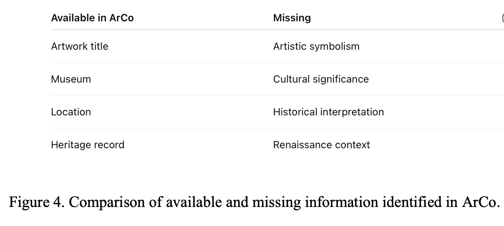
Figure 4. Comparison of available and missing information identified in ArCo.
Figure 4 Interpretation
Figure 4 compares the information available in the ArCo Knowledge
Graph with important contextual information that is currently missing.
While ArCo provides structured metadata such as artwork titles,
museum information, locations and heritage records, contextual
knowledge including artistic symbolism, cultural significance,
historical interpretation and Renaissance intellectual context is
not explicitly represented.
Identified Knowledge Gap
One of the most significant missing elements concerns the
relationship between Sandro Botticelli and Neoplatonism.
Art historians frequently associate Botticelli's works,
particularly The Birth of Venus and Primavera,
with Neoplatonic philosophy. However, this relationship is not
explicitly represented in the current ArCo knowledge graph.
Technical Observations
The analysis demonstrates a common limitation of cultural heritage
knowledge graphs. Structured metadata is well represented, while
interpretative, philosophical and contextual knowledge is often
absent because it is more difficult to formalise using existing
ontology structures.
Step Conclusion
The analysis identified a missing semantic relationship between
Sandro Botticelli and Neoplatonism. This knowledge gap provides
an opportunity for ontology enrichment and will be addressed in
the next step.
Step 4 – Ontology Enrichment
Research Question
How can the identified knowledge gap be addressed through ontology
enrichment?
Purpose
The purpose of this step is to enrich the cultural heritage
knowledge graph by introducing a new semantic relationship that
captures an important aspect of Botticelli's intellectual and
philosophical context.
Prefixes Used
PREFIX ex: <http://example.org/>
Proposed Ontology Enrichment
Based on the analysis conducted in Step 3, a new semantic
relationship is proposed:
Sandro Botticelli → influencedBy → Neoplatonism
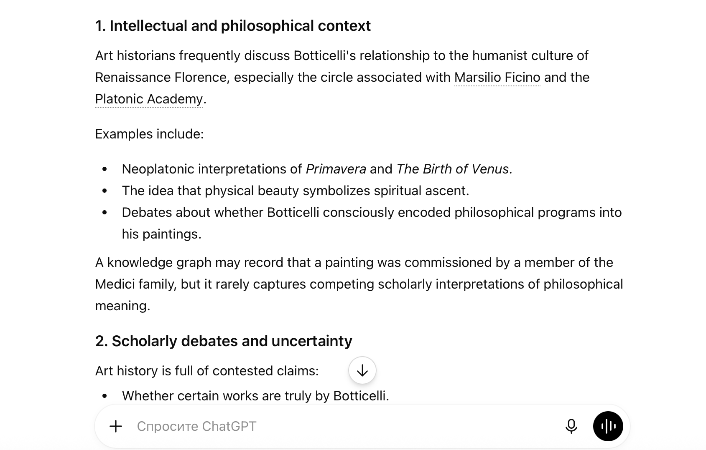
Figure 5. Proposed ontology enrichment introducing a relationship
between Botticelli and Neoplatonism.
Figure 5 Interpretation
Figure 5 visualises the proposed ontology enrichment. The new
semantic relationship connects Sandro Botticelli with the concept
of Neoplatonism through the property influencedBy. This
enrichment extends the cultural heritage knowledge graph by
representing an important philosophical influence that is not
explicitly captured in the original ArCo data.
Expected Benefits of the Enrichment
The new relationship allows researchers to discover connections
between artists and philosophical movements. It also improves the
ability of semantic queries to retrieve contextual knowledge about
Renaissance intellectual traditions and artistic influences.
This relationship explicitly represents the philosophical
influence of Neoplatonic thought on Botticelli and enriches the
interpretative dimension of the knowledge graph.
Ontology Element
Value
Subject
Sandro Botticelli
Predicate
influencedBy
Object
Neoplatonism
Enrichment Type
Philosophical Influence
Purpose
Represent contextual cultural knowledge
Table 2. Semantic structure of the proposed ontology enrichment.
RDF Triple Representation
Subject
Predicate
Object
Sandro Botticelli
influencedBy
Neoplatonism
RDF Triple Explanation
The enrichment is represented as an RDF triple consisting of a
subject (Sandro Botticelli), a predicate (influencedBy) and an
object (Neoplatonism). This structure follows the RDF data model
used throughout semantic web technologies.
The proposed enrichment was selected because Neoplatonism is
frequently cited in art historical scholarship as a significant
intellectual influence on Botticelli's artistic production.
Representing this relationship allows the knowledge graph to
capture contextual and philosophical information that is not
available through descriptive metadata alone.
Technical Observations
The enrichment demonstrates how ontology engineering can extend
existing cultural heritage knowledge graphs. By introducing new
semantic relationships, it becomes possible to connect artworks,
artists and intellectual movements within a richer semantic
framework.
Step Conclusion
The proposed relationship between Sandro Botticelli and
Neoplatonism addresses a significant knowledge gap identified in
the previous step. The enrichment improves the semantic richness
of the knowledge graph and provides the basis for validation in
Step 5.
Step 5 – Validation of the Enrichment
Research Question
Does the proposed ontology enrichment improve the ability of the
knowledge graph to represent and retrieve contextual information
about Sandro Botticelli?
Purpose
The purpose of this step is to validate the proposed semantic
relationship and evaluate its usefulness for cultural heritage
knowledge discovery.
Validation Scenario
A hypothetical validation scenario was designed to test whether
the new relationship between Sandro Botticelli and Neoplatonism
could support additional semantic queries and improve contextual
knowledge retrieval.
This query retrieves all artists associated with the concept of
Neoplatonism through the newly introduced semantic relationship.
Without ontology enrichment, this type of contextual retrieval
would not be possible.
Expected Results
The query is expected to return Sandro Botticelli as an artist
associated with Neoplatonic thought. Additional artists could be
retrieved if similar relationships were added to the ontology in
future enrichment activities.
Validation Analysis
The validation demonstrates that the proposed enrichment improves
the expressiveness of the knowledge graph. Researchers can now
retrieve information based on philosophical influences rather
than relying exclusively on descriptive metadata.
The enrichment also creates opportunities for connecting artists,
artworks and intellectual movements through semantic relationships.
Technical Observations
Ontology enrichment enhances query capabilities by introducing
new semantic paths between entities. The proposed relationship
extends the existing knowledge graph without altering its
original structure and remains compatible with RDF and linked
data principles.
Step Conclusion
The validation confirms that the proposed relationship between
Sandro Botticelli and Neoplatonism improves the contextual
representation of cultural heritage knowledge. The enrichment
supports more meaningful semantic queries and demonstrates the
value of ontology engineering for cultural heritage applications.
Step 6 – Final Evaluation and Discussion
Project Evaluation
The project demonstrated the usefulness of semantic technologies
for the representation and analysis of cultural heritage
information. The ArCo Knowledge Graph provided a structured
foundation for discovering and analysing Botticelli-related
entities and semantic relationships.
Evaluation of the Knowledge Graph
ArCo successfully represents artworks, cultural heritage entities,
collections and related metadata through RDF and linked data
technologies. The knowledge graph enables semantic exploration
that extends beyond traditional keyword-based search methods.
However, the analysis revealed that important contextual and
interpretative information is not always explicitly represented
within the existing ontology.
Evaluation of the LLM-assisted Approach
The use of multiple Large Language Models provided additional
support for identifying potential knowledge gaps. Although the
models generated different suggestions, recurring themes emerged,
including Neoplatonism, Renaissance Humanism, artistic symbolism
and intellectual influences associated with Botticelli.
The comparison of LLM responses helped to identify the most
appropriate ontology enrichment candidate and demonstrated the
potential value of LLMs as tools for supporting ontology
engineering tasks.
Evaluation of the Ontology Enrichment
The proposed relationship between Sandro Botticelli and
Neoplatonism addresses a meaningful gap in the semantic
representation of cultural heritage knowledge. The enrichment
extends the interpretative dimension of the knowledge graph and
supports more sophisticated semantic queries.
The validation scenario demonstrated that the new relationship
can improve contextual knowledge retrieval and facilitate the
discovery of connections between artists, artworks and
philosophical movements.
Limitations
Several limitations should be acknowledged. The enrichment was
validated conceptually rather than through direct integration
into the ArCo production environment. In addition, LLM-generated
suggestions require verification through reliable scholarly
sources before being incorporated into cultural heritage
ontologies.
Future Work
Future research could extend the ontology by representing
additional contextual concepts such as Renaissance Humanism,
mythological symbolism, allegorical interpretation and the
influence of the Medici intellectual circle. Further work could
also compare a larger number of LLMs and evaluate alternative
ontology enrichment strategies.
Step Conclusion
The project demonstrates that knowledge graphs, ontology
engineering and LLM-assisted analysis can be effectively combined
to improve the representation of cultural heritage knowledge.
Together, these approaches support richer semantic discovery and
provide new opportunities for cultural heritage research.
General Conclusion
This project investigated the representation of Sandro Botticelli
within the ArCo Knowledge Graph and demonstrated how semantic web
technologies can support cultural heritage research. Through the
use of RDF, SPARQL and linked data principles, it was possible to
discover, analyse and interpret Botticelli-related cultural
heritage entities represented within the knowledge graph.
The analysis revealed that although ArCo provides rich descriptive
metadata, important contextual and interpretative knowledge is not
always explicitly represented. To address this limitation, multiple
Large Language Models (LLMs) were consulted to identify potential
knowledge gaps. The comparison of LLM responses highlighted several
missing concepts, including Renaissance Humanism, artistic
symbolism and Neoplatonic influences.
Based on the combined results of semantic analysis and LLM-assisted
evaluation, the relationship between Sandro Botticelli and
Neoplatonism was selected as the most appropriate ontology
enrichment candidate. The proposed enrichment was formally
represented using RDF and Turtle notation and subsequently
validated through a semantic query scenario.
The project demonstrates that knowledge graphs, ontology
engineering and LLM-assisted analysis can be effectively combined
to enhance the representation of cultural heritage knowledge.
These approaches not only improve semantic discovery and knowledge
retrieval but also support a deeper understanding of artworks,
artists and the intellectual traditions that shaped their cultural
significance.
M. Baxandall, Painting and Experience in Fifteenth-Century Italy.
Available:
https://global.oup.com
Accessed: June 2026.
E. Wind, Pagan Mysteries in the Renaissance.
Available:
https://archive.org
Accessed: June 2026.
M. J. B. Allen, Marsilio Ficino and the Phaedran Charioteer.
Available:
https://www.ucpress.edu
Accessed: June 2026.
M. J. B. Allen, The Platonism of Marsilio Ficino:
A Study of Renaissance Philosophy and Its Influence on Art.
Available:
https://www.ucpress.edu
Accessed: June 2026.